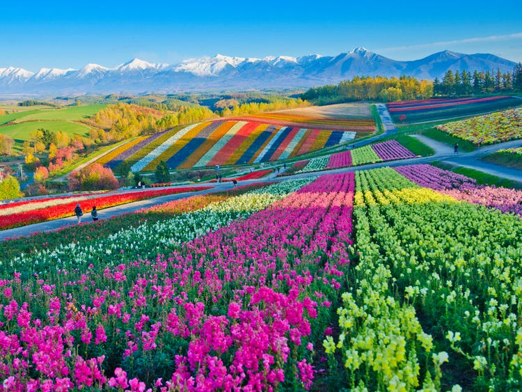
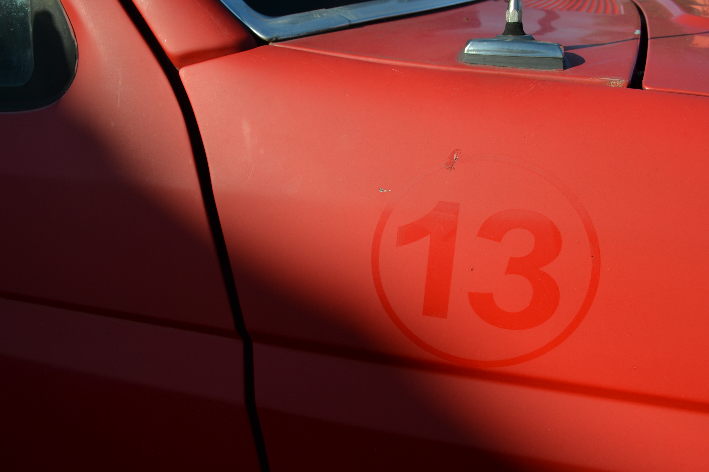
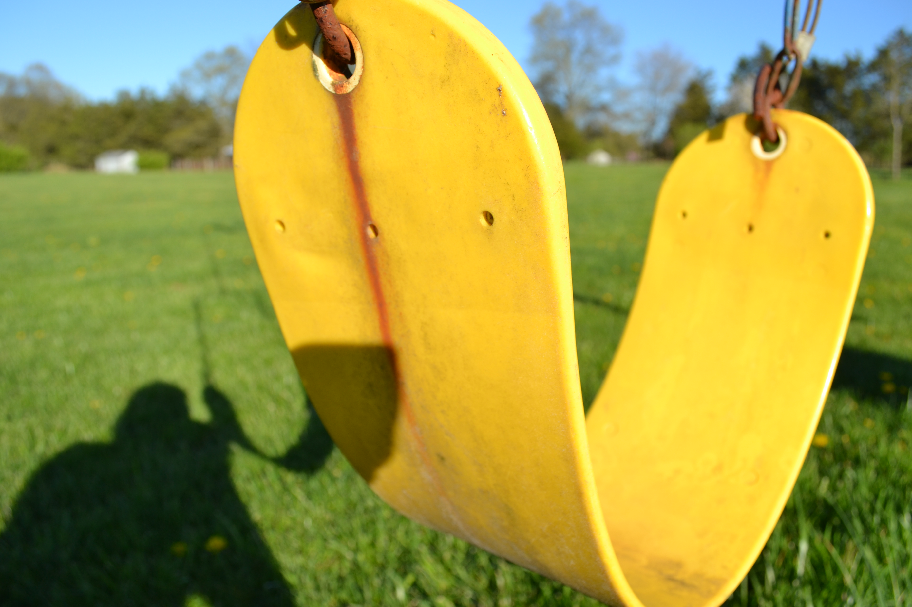
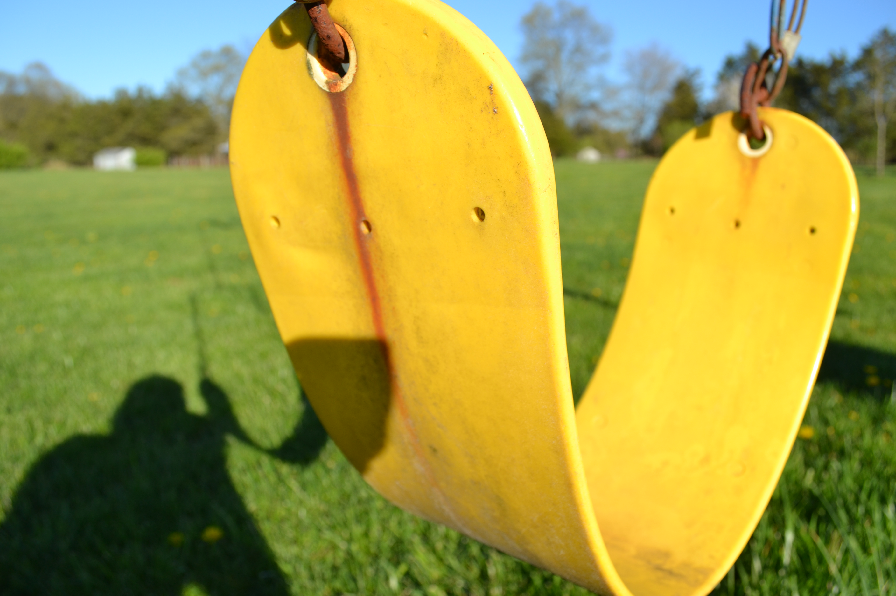

Concept
During the semester of spring 2021, I was tasked with creathing a collection of photos for a project.
The theme I chose was Colors of the Countryside.
 

I first took multiple close ups of objects, as to entice the viewers.


Then, I zoomed out to display the whole object from afar.
Evolution
After double checking I had photots of all the colors I wanted for the project I was ready to edit them.
About the creator

Alexander Mamrol is a student of Jefferson Univerity, and an Arch. study Major. He has a hobby of creating multiple pieces of art. The artwork created ranges from drawings, cardboard models, and detailed schematics. Passions include cartoons and videogames. Will produce drawings for commisions, and has a great personality.

First, I brought the uneddited photos into Photoshop.

Then I toggled the values of the colors and hues for each picture.

It was important to crop out any undesirable elements.


Each image was placed in the order they appeared in the rainbow, starting with close ups, to the faraways.


Final Result
The final portion of the project was creating a narration and producing a video.

This is the final product video.
Teacher's Comments
It has been a pleasure to have you in my class, Alex. You have so many wonderful things to say and deep insights into the world around you. I hope you continue to share that with others.
Timelime of events.
| Project Start Date | April 7 2021 |
| Photography Date | April 15 2021 |
| Photoshop Process | May 5 2021 |
| Presentation Date | May 10 2021 |